Мониторинг объектов ресурсоснабжения Москвы. Карта — главный экран, панели плавают над ней; цвет закреплён за смыслом; состояние объекта читается формой, а не только оттенком. Спецификация — в design/README.md.
design/README.md
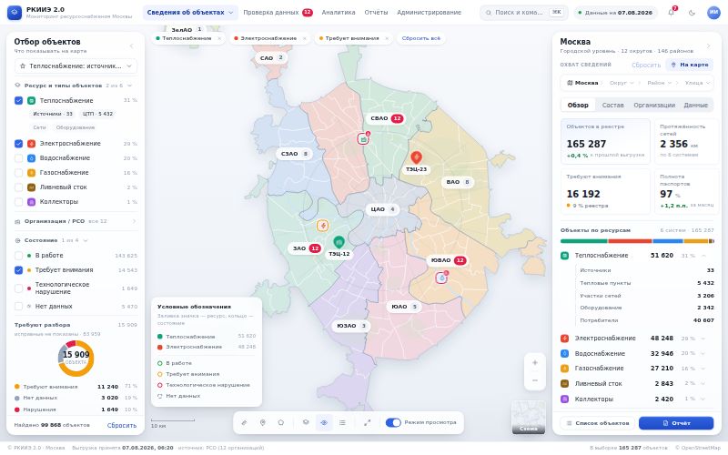
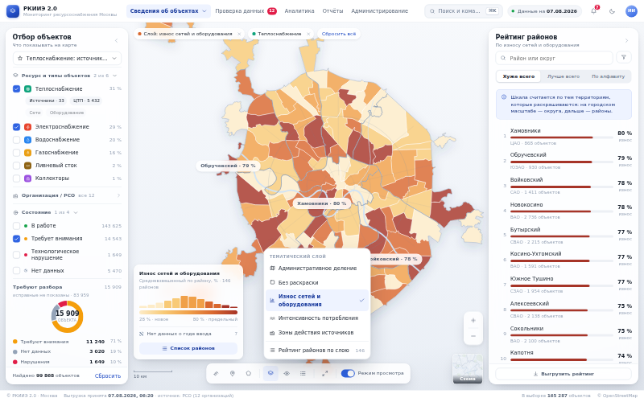
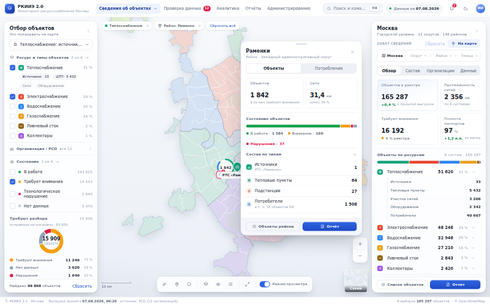
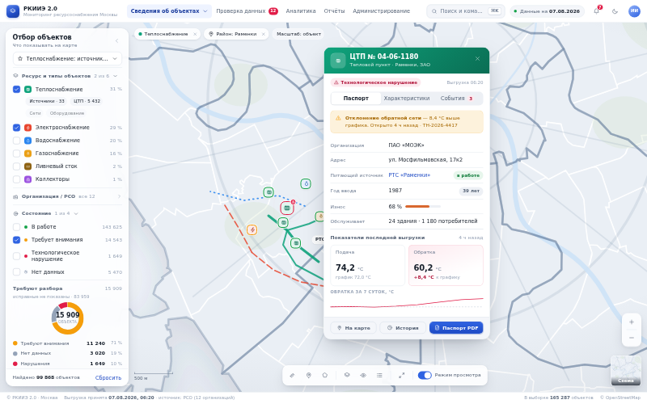
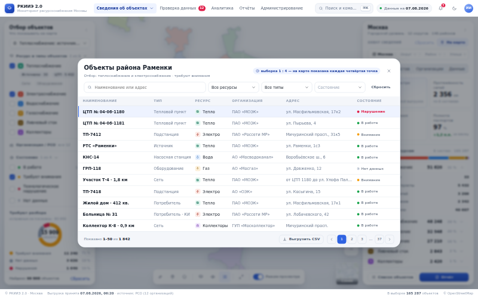
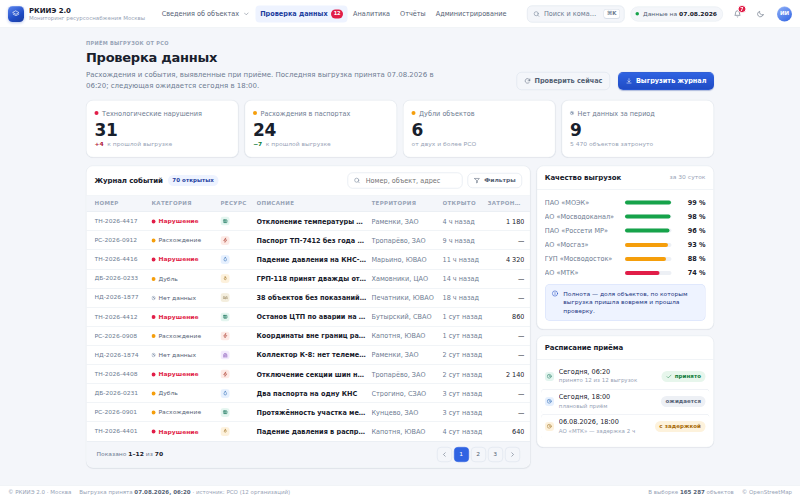
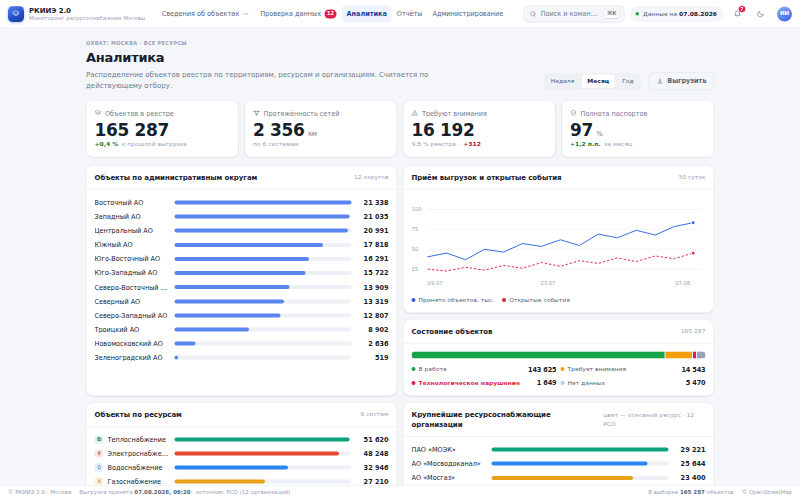
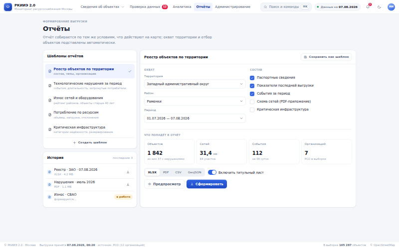
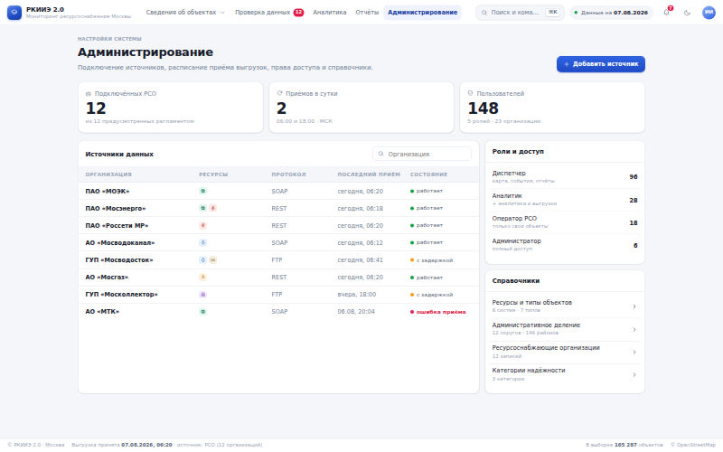
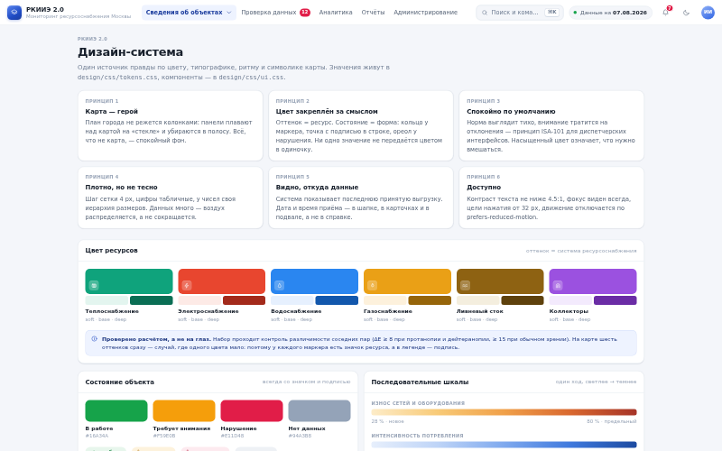
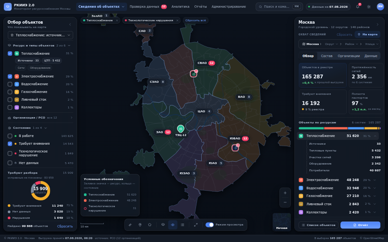
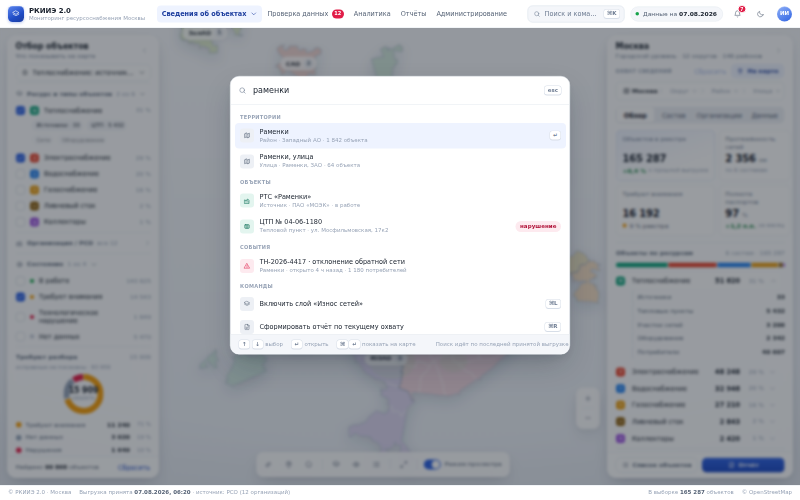
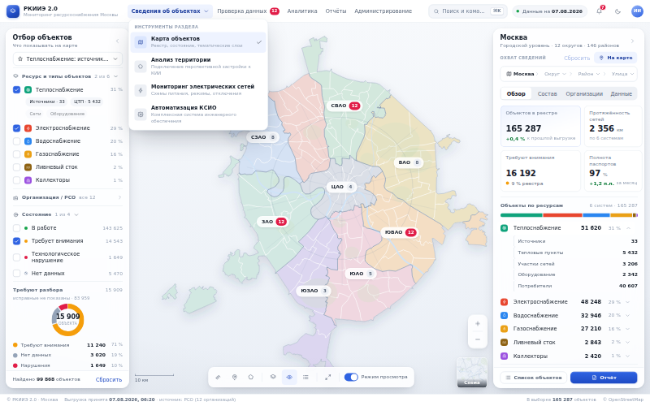
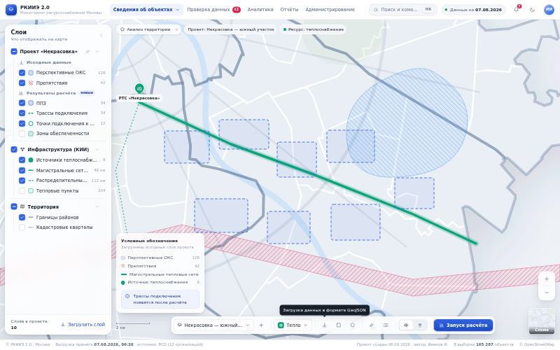
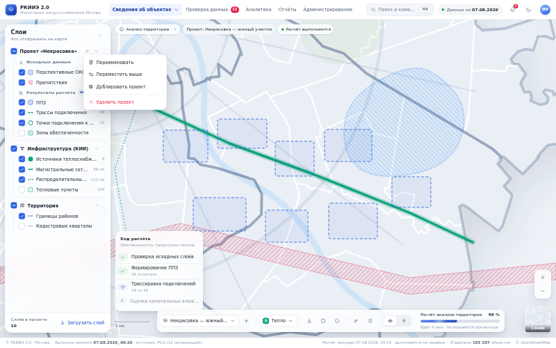
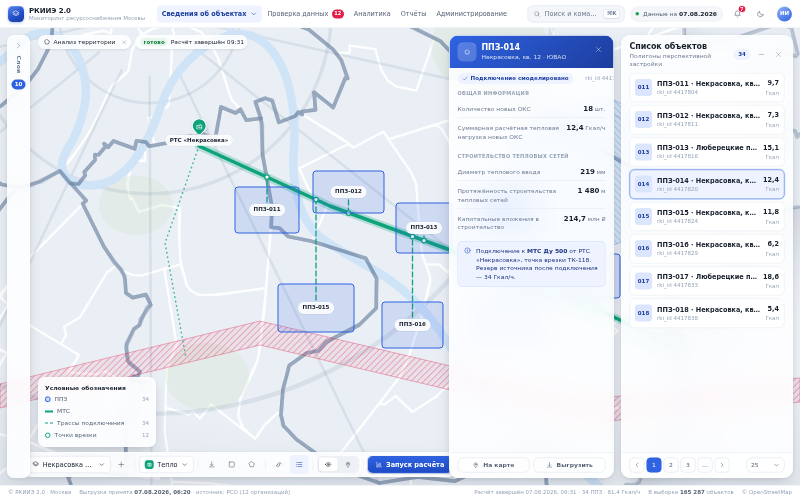
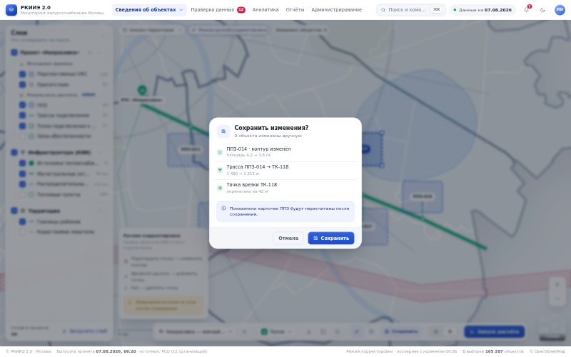